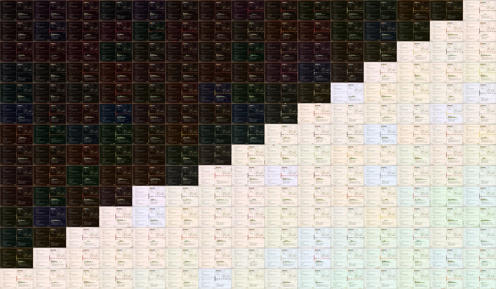

A spice rack for your desktop
100 spices from cumin to mulling spices, as Omarchy themes. Each theme has a night variant and a day variant. Each variant has 5 backgrounds at 6K. 4 are photographic renders: the Omarchy wordmark in the spice, the spice in a bowl, the ground spice on a wooden spoon and whole pieces up close. The fifth is a profile card. A sixth background is a video: dust drifts through a beam of light over the Omarchy wordmark, sifted in the ground spice.

Install
install.sh copies themes into ~/.config/omarchy/themes. It installs the night and day variants of a theme unless you pick one with --variant. It never replaces a theme that you made.
One spice, night and day, no clone
$ curl -fsSL https://bjarneo.github.io/spice-themes/install.sh \
| bash -s -- saffron --set
One variant only
$ curl -fsSL https://bjarneo.github.io/spice-themes/install.sh \
| bash -s -- saffron --variant day --set
All 200 themes
$ git clone --depth 1 https://github.com/bjarneo/spice-themes ~/.local/share/spice-themes $ ~/.local/share/spice-themes/install.sh --all $ omarchy theme set saffron-night
Apply with Aether
Select a spice and a variant, then select Apply with Aether. Aether downloads colors.toml and a 3840×2160 copy of the background, then applies them at once. Install as Omarchy theme adds the variant to the Omarchy theme menu.
Variants: night and day. Theme names end in -night or -day, for example saffron-night. Other options: --all, --list, --update, --remove, --link and --force. Run install.sh --help for details.